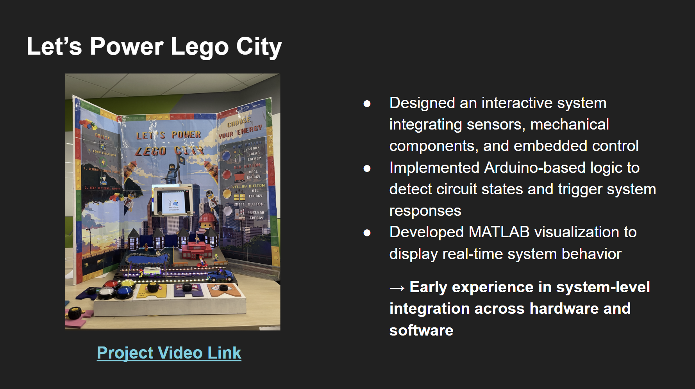

Goal
Build an interactive system that connects physical components, embedded control, and visual feedback in a way that is easy to understand and engaging to use.
Project Detail
An interactive hardware-software project that combined sensors, mechanical design, Arduino-based control logic, and MATLAB visualization to create a responsive physical system.
Build an interactive system that connects physical components, embedded control, and visual feedback in a way that is easy to understand and engaging to use.
This project was an early system-integration experience that combined hardware, mechanical design, and software into one interactive build. The goal was not only to make separate parts work, but to connect them into a single system that could sense conditions and respond visibly.
It involved designing physical components, implementing Arduino-based control logic, and creating a visualization flow to show the system's state on an external display.

The most important part of this project was understanding how physical inputs, embedded logic, and software outputs influence one another in a real system.